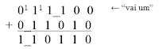
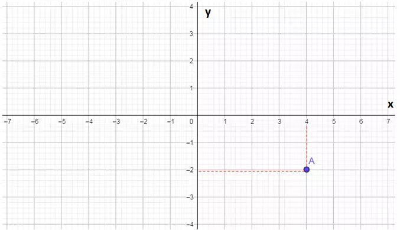

Home |
Introdução |
Facilidades |
Dificuldades |
Avaliação |
|---|
Conteúdos em que tive facilidade de aprender e compreender:
Um número binário é uma representação alternativa de um número utilizando apenas dois dígitos, sendo eles 1 ou 0. Por conta do sistema binário ser o sistema numérico mais simples, porque só usa dois dígitos, é possível armazenar e manusear os números em forma física, por exemplo, como a eletricidade que viaja através de um fio ou cabo. Graças a forma física dos números binários, é possível que eles existem dentro de um microprocessador, de uma memória ou de um disco rígido do seu computador ou ainda que viaje pela internet ou por uma rede wi-fi.
Decimal 0 1 2 3 4 5 ... Binário 00 01 10 11 100 101 ...
A adição de números binários é muito semelhante com a adição comum. A única diferença é que os únicos números que podem ser usados são 1 ou 0. Então, 2 em binário é 10, logo, o número "0" fica junto com os resultados, e o número "1" sobe para somar com o "número vizinho".
Segue o exemplo:

O plano cartesiano é um sistema formado por duas cordenadas, X e Y. Com ele podemos elaborar um gráfico que apresenta figuras geométricas planas.
As coordenádas são dispostas sempre da mesma forma: (x,y). Logo o primero número sempre será encontrado no eixo X, e o segundo respecivamente no eixo Y. Todo número à esquerda ou abaixo do ponto 0 é negativo. Sabendo disso apenas buscamos pelos números no plano e assim formaremos um gráfico.
Segue o exemplo: Ponto A (4,-2)
